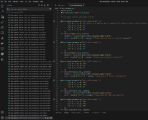

Ellen Houghton
|
Skills mailto: ellen |


This game project demonstrates how I used GitHub workflows, initiating automatic unit tests to continuously ensure the quality of my code. I used pytest and Pexpect for unit and integration testing, respectively. The debugger tool was also used to rectify errors swiftly. Additionally, I utilized a GitHub project board to efficiently manage tasks, breaking objectives into manageable, deliverable chunks, keeping the project on track and my goals clear. This project is my first dive into Test Driven Development.

{kind=link}
The current project utilizes a metaprompt prefix in API requests to the text-davinci-003 AI model, summarizing user-logged symptoms. These symptoms, timestamped and stored in a Postgres database, can be summarized on demand. A bubbleplot illustrates the frequency of symptoms over time and throughout the day, with bubble size signifying reported pain levels.
To develop this application, I acquired knowledge in NLP and the NLTK, creating a preliminary summarizing tool to establish a benchmark for the API/metaprompt development. Finally, I adapted my knowledge of mysql to create and connect to a PostgreSQL database using a docker image.

My simple debt comparison calculator creates 3 debt objects and calculates how long it will take to repay 3 debts, comparing 3 specific repayment methods; stack, snowball & avalanche.

The github repository for the whole group project is called JAMEE and is located in my github.
 Github Repo: sentence_translation
Github Repo: sentence_translation
This project takes user input, connects to the Azure Cognitive API to identify the language of the input and translate into 5 given languages; spanish, dutch, french, german & english.
This project connects to a MET office API, a weather object is createdwith the retrieved weather forecast data which is then used to display customised information in the app.

Data for the weather forecast is retrieved and a weather object is created, which determines the results given to the user, e.g. whether the weather is good enough to hang out and leave laundry to dry on the line all day. The flask app also contains css to maintain the mobile size for the display on larger screens.

This project uses data downloaded from MET office into pandas to create heatmaps using Matplotlib, NumPy & Seaborn libraries.
A heatmap to show 10 years of weather data, displaying the total rainfall in mm at Heathrow Airport.

A heatmap to show 20 years of weather data, displaying the mean daily min temperature at Heathrow Airport.

A heatmap to show 70 years of weather data, displaying the mean daily max temperature at Heathrow Airport.


I started coding during the pandemic and have github and docker projects to showcase my skills. I am looking for a junior role with opportunities to learn.